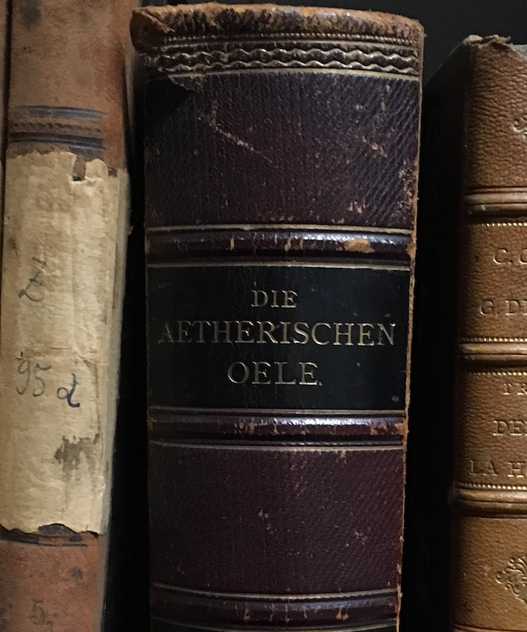
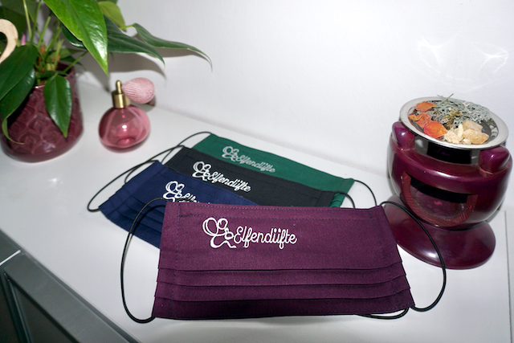
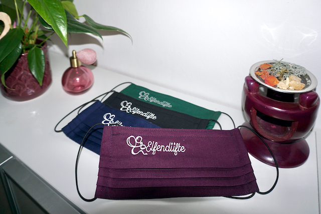
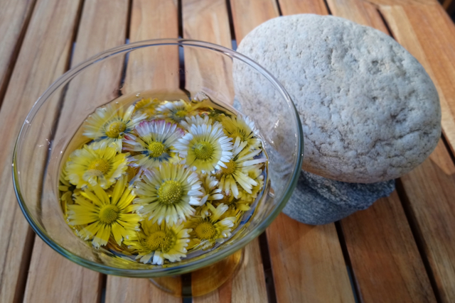
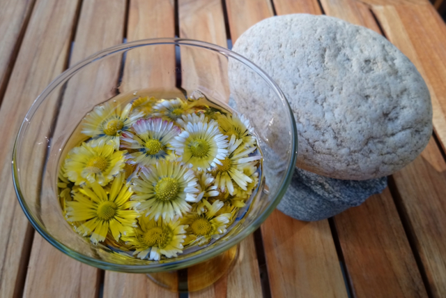

Schon lange beschäftigt sich der Mensch mit dem Duft und der Wirkung von Früchten, Harzen, Hölzern, Pflanzen, Samen und Wurzeln. Unterschiedliche Methoden (Destillation, Extraktion, Pressung,...) ermöglichen die Gewinnung ätherischer Öle, Absolues und Extrakte. Die geballte Kraft an unzähligen Inhaltsstoffen in jedem Tropfen kann eingesetzt werden, um Gesundheit zu unterstützen, Krankheiten zu lindern und Wohlbefinden zu erlangen.
Atmet man einen Duft aus der Raumluft durch die Nase ein, gelangt dieser direkt ins Limbische System. Das Zentrum, wo u.a. Gefühle gesteuert und verarbeitet werden. Verschiedene Erinnerungen und Emotionen, die man mit dem Duft verbindet, werden ausgelöst. Ein bekanntes Beispiel ist wohl der Lavendel. Die einen lieben ihn, die anderen überhaupt nicht. In die Atemluft gelangt das ätherische Öl z.B. mittels Aromalampe, Diffusor, Spray, oder beim Sauna-Aufguss.
Aufgetragen auf die Haut entfalten ätherische Öle ihre Wirkung, indem sie in den Stoffwechselvorgang des Menschen gelangen. Dies kann ein Körperöl, Duschgel oder Badeöl sein. Aber auch eine Anwendung mit Wickel und Kompresse ist möglich.
Das Wirkungsspektrum der ätherischen Öle reicht von A wie aufmunternd, aphrodisierend über E wie entspannend, erfrischend, entzündungshemmend, hin zum H wie harmonisierend bis schließlich zum Z wie zentrierend. Fast zu jedem Buchstaben findet man ein Wort, mit dem man ätherische Öle beschreiben kann. So vielfältig wie die unzähligen Inhaltsstoffe.
Um die Wirkung auf Körper, Geist und Seele in vollen Zügen genießen zu können, ist bei der Menge an benötigtem Pflanzenmaterial (für 1 kg Melissenöl werden bis zu 8000 kg Blätter destilliert) auch an Kontraindikationen und Vorsichtsgebote zu denken, damit es zu keinen unerwünschten Nebenwirkungen kommt.
Aus Früchten, Kernen, Nüssen, Pflanzen und Samen kann man mittels Pressung oder Mazeration fette Öle (z.B. Johanniskraut- Mohnblütenmazerat, Hanfsamen-, Kokos-, Mandel-, Sanddorn-, Schwarzkümmel-, Sesam-, Wildrosenöl) und Wachse (Jojoba) gewinnen. Diese finden Anwendung in verschiedenen Bereichen: bei der Gesichts- und Körperpflege, zur inneren Einnahme bei einer Ölkur oder in der Küche.
Zu beachten sind Empfehlungen und Anwendungsmöglichkeiten, da sich nicht jedes Öl/Wachs für alle Bereiche eignet!
Eine wundervolle Wirkung haben Hydrolate. Lange als "Nebenprodukt" bei der Herstellung von ätherischen Ölen bezeichnet, gewinnen diese immer mehr an Bedeutung.
Die in den Destillaten enthaltenen wasserlöslichen Substanzen von Lavendel, Melisse, Orangenblüte, Pfefferminze, Rose, Rosmarin und vielen weiteren, kommen in Körperpflegeprodukten, als zarte Raumbeduftung oder direkt auf die Haut gesprüht zur Anwendung.
Im Beratungsgespräch können Sie an Lieblingsdüften schnuppern und neue Duftrichtungen kennenlernen. Ebenso werden passende Hydrolate und Pflanzenöle vorgestellt. Um Kontraindikationen und Vorsichtsgebote berücksichtigen zu können, findet bei der Erstberatung eine Annamneseerhebung statt. Je nach Duftvorliebe und anstehenden persönlichen Themen entsteht eine Rezeptur, die für Sie zum Mitnehmen gemischt wird.
Mögliche Themenbereiche: Steigerung des Wohlbefindens, Förderung der Gesundheit und Hautpflege, sowie Unterstützendes für Lern- und Prüfungssituationen, bei Wandlungsprozessen (Pupertät, Klimakterium), zur Schlafförderung, bei Sterbebegleitung und Trauerbewältigung,...
Um diese Wohlfühlmischung in den Alltag zu integrieren, werden Anwendungsmöglichkeiten besprochen und eigens erstellte Unterlagen zum Nachlesen mitgegeben.
Nach ca. 3 Wochen erfolgt eine Nachbesprechung, wo bewährte Mischungen nachproduziert oder bei Bedarf abgeändert werden.
Das rhythmisches Körperbalancing an Armen, Beinen oder Rücken durchgeführt, kann Selbstheilungskräfte aktivieren, Blockaden lösen und das Wohlbefinden steigern.
Dieses führe ich nach dem 3 Ebenen Modell der WKO durch. Die Anwendung erfolgt mit einer Mischung aus ätherischem Öl und Basisöl auf der Haut (materielle Ebene). Die Wirkung zeigt sich auf der energetisch-feinstofflichen Ebene, dem eigentlichen Tätigkeitsbereich eines Humanenergetikers.
Wickel und Auflagen können ebenfalls in der Praxis durchgeführt werden. Anwendbar als unterstützende Maßnahme bei Entgiftungskuren oder einfach nur zum Entspannen.
Nach einem kurzem Vorgespräch wird eine, für den Moment passende Ölmischung gewählt, die auf Wunsch zur Anwendung kommt.
Wichtig: Die Durchführung einer Körperanwendung erfolgt ausschließlich auf intakter, gesunder Haut.
Sobald Düfte in unsere Nase gelangen, lösen diese in unserem Unterbewusstsein eine bestimmte Reaktion aus, auch wenn sie kaum wahrnehmbar sind. Umso angenehmer ein Duft erscheint, desto länger wird man sich in diesem Umfeld aufhalten.
Mit einem individuell erstelltem Naturparfum wird die Einzigartigkeit einer Person unterstrichen. Ich unterstütze Sie beim Wählen und Zusammenstellen aus einer Vielzahl von Essenzen.

Düfte sollten zu Menschen, deren Umgebung und Stimmung passen.
Um den Wiedererkennnungswert Ihrer Firma zu steigern, empfehle ich die Unterstützung mittels Corporate Scent.
In Warteräumen und Praxen kann mit raumluftreinigenden und -harmonisierenden Duftmischungen eine angenehme Atmosphäre geschaffen werden. Mitarbeiter in Büros können zusätzlich von konzentrationssteigernden ätherischen Ölen profitieren.
Gemeinsam wird eine passende Komposition für Ihr Unternehmen kreiert, Einsatzmöglichkeiten besprochen und auf Wunsch ein Beduftungskonzept umgesetzt.
Zur Anwendung kommen nur naturreine ätherische Öle, Pflanzenöle und Hydrolate. Vorzugsweise in Bio Qualität (nach Verfügbarkeit) von Firmen in und um Österreich, z.B. von feeling oder bergila. Über den Link gelangen Sie direkt zum Shop, um aus einer Vielzahl von Produkten wählen zu können.
In meiner Praxis ist nur Barzahlung möglich.
Tipp: Viele Zusatzversicherungen gewähren eine Kostenrückerstattung für ganzheitsmedizinische Behandlungsmethoden gegen Vorlage der Honorarnote. Informieren Sie sich!
 Sabine Krenn
Sabine KrennSeit vielen Jahren bin ich als Dipl. Gesundheits- und Krankenpflegerin in verschiedensten Einrichtungen und Richtungen tätig.
Erst das Verfassen einer Fachbereichsarbeit im Rahmen der Ausbildung zur Dipl. Aromapraktikerin/Aromapflege veranlasste mich zu reflektieren, wann ich den ersten „Kontakt“ mit ätherischen Ölen hatte und was sich daraus entwickelte:
Wie bei vielen anderen auch, war mein erster Zugang vor über 20 Jahren „NUR“ über den Duft. Ein Fläschchen wurde angeschafft, damals eine Duftmischung. Das erste Eintauchen ins Reich der naturreinen Düfte begann, indem ich immer neugieriger wurde und nachlas, was da denn alles so drin sei und warum es so duftet wie es duftet. Bücher um Bücher folgten – nicht nur Neuerscheinungen. Auch vergangenes Wissen, nachzulesen in Büchern aus Antiquariaten, finde ich sehr spannend. Eine zusätzliche Liebe! 💜
Da ätherische Öle aus einer Vielzahl an Inhaltsstoffen bestehen, öffnete bei mir das Erlernen der Biochemie ganz neue Perspektiven. Mit dem Wissen kann ich in Aromafachberatungen die psychische und physische Wirkung gezielt einsetzten und gleichzeitig Duftvorlieben berücksichtigen.
Bei meinen Körperpflegeprodukten achte ich sehr auf die verwendeten Inhaltsstoffe. Parfums, Körperöle und Gesichtspflege, sowie Mazerate mische und rühre ich selbst zusammen. Damit kann ich bei den Zutaten bestimmen, was rein soll und was nicht.
Private Umstände ermöglichen mir das Arbeiten in meiner Praxis, in der ich Ihnen dieses wunderbar duftende und wirkende Reich näherbringen kann.
Im März begann ich meine Ausbildung zur "Praktikerin für dialogisch aktive Duftkommunikation" mit Christine Lamontain als Referentin bei aromainfo.at, um in die Welt der Psychoaromatherapie einzutauchen!
Der Lehrgang zur "Dipl. Aromapraktikerin" und "Komplementäre Pflege – Aromapflege", sowie Seminare für "Rhythmisches Körperbalancing" und "Duftmarkting & AirDesign" bei aromainfo.at (Ingrid Karner) befähigen mich in diesem Bereich tätig zu sein. Weitere Fortbildungen, "Palliative care" und "Niemand riecht so gut wie du" (Prof. Hatt) bei aromapflege.com (Evelyn Deutsch), bereichern meine Tätigkeit.
Vereinsmitglied der VAGA – Vereinigung für Aromapflege und gewerbliche AromapraktikerInnen
Zeitqualität beinhaltet Tätigkeiten, die ich im Zusammenhang mit meiner Herzensarbeit im Rhythmus der Jahreszeiten ausführe.
Da es für DIY und Produktbeschreibungen bereits eine Vielzahl an Beiträgen von namhaften Firmen und Aromafachleute gibt, möchte ich bei meinen Zeitqualitäten lediglich darauf verweisen. Natürlich stehe ich gerne beratend zur Seite, falls Unklarheiten bei der Umsetzung von Anwendungsmöglichkeiten oder Fragen zu den vorkommenden Produkten auftreten. Ebenso sind einige der angeführten Produkte auf Anfrage auch bei mir in der Praxis zu erwerben.
Der HERBST 🍂, wenn die Ernte für so manches von statten geht und der Spätsommer ins Land zieht. Eine meiner Lieblingszeiten. Die Hitze ist Großteils vorbei, die Blätter beginnen sich langsam zurückzuziehen und verfärben sich. Für mich heuer besonders spannend, da ich seit kurzem stolze Besitzerin einer Leonardo Destille bin! 💚💜
Salbei, Schafgarbe, Hamamelis und ein Kieferngewächs 🍃 sind erste Befüllungen.


Mit geeignetem Pflanzenmaterial kann ich Destillate herstellen, die im Privatbereich zur Anwendung kommen.
Die Blüten- und Kräuterwässerchen sind für ihre Sanftheit bekannt, haben aber trotzdem eine starke Wirkung. Geeignet auch in der Babypflege, für Kinder, Schwangere und ältere Personen. Einige Ausnahmen sind bei der Anwendung, trotz guter Verträglichkeit, im Einzelfall zu beachten.
Ich verwende sie gerne für Parfum und Raumsprays, pur als Tonik oder als Wasserphase bei selbstgerührten Cremen.
Diese Pflanzenwässerchen werden nach einer Zeit der Reifung, in kleine Chargen abgefüllt. Der geringe Anteil an gewonnenem ätherischem Öl (im Bild in der vordersten Flasche erkennbar 🤓) darf als leichte Konservierung bleiben. Eine Ausnahme ist die Zaubernuss, auch bekannt als Hamamelis. Aus ihr kann ausschließlich ein Hydrolat gewonnen werden.
Nicht alle Hydrolate ähneln dem Duft der Pflanze die destilliert wurde. Mein Hauptaugenmerk liegt bei den Anwendungsmöglichkeiten deshalb auch bei der Wirkung.
Der WINTER ❄️, wenn am 21. Dezember mit der Wintersonnwende die Tage langsam länger werden und mit der Thomasnacht vielerorts die Rau(h)nächte ♨️ beginnen! Eine Zeit, in der auch ich dieses Brauchtum pflege, dabei das vergangene Jahr reflektiere und Neues willkommen heiße. Zum Einsatz kommt, was mir gerade "in die Hände fällt". Räucherwerk aus Bestand und zusammengetragene Kräuter und Harze von meinen Wanderungen in diesem Jahr. Besonders kraftvolle Tage, wenn man entschleunigt in die nächsten Tage blicken kann, weil Weihnachtsgeschenke bereits zum Verschenken bereitstehen! 🎁
Verschneite Latschenkiefer, Eisrose, Achtsamkeitszauber und Wunscherfüllung! 🌟
 


Selbstgemachtes für liebe Menschen, die mich das ganze Jahr begleitet haben! 🤩
- Zirbenhydrolat verwandelt schlaflose Nächte in süße Träume
- Badesalz macht müde Füße standhafter
- Körperbutter für streichelweiche, samtige Haut
- Johanniskrautmazerat, wohltuend bei körperliche und seelischen Wehwehchen 🤕
- Raumspray, versprüht weihnachtliche Atmosphäre
Selbstproduziert wurde aber noch mehr, da die Vorweihnachtszeit so viel anders war, als die Jahre davor.
Weihnachtsmärkte gibt es keine und so schien ein liebgewonnener Brauch der vergangen Jahre nicht durchführbar: Elfenpunsch trinken am Grazer Hauptplatz!
"Aus der Not wurde Tugend" 💡 und so wurden Gewürze gebrüht, Eierlikör selbst hergestellt, verrührt, verziert und schließlich bei erstem Schneefall verkostet! 😋
FRÜHLINGsduft 🌿 liegt in der Luft. Die dunkle, träge, gemächliche Zeit liegt hinter uns. Länger werdende Tage stärken unsere Gedanken und Achtsamkeit. Überall beginnt es zu sprießen, sich zu bewegen. Ein Frühjahrsputz eignet sich nicht nur für die 4 Wände. Auch unserem Körper täte es gut sich einem zu unterziehen, um sich vom Ballast der vergangenen Monate zu befreien.
Einfache und effektive Methoden warten nur auf deren Umsetzung. Gerne begleite ich Sie in dieser Zeit. 💚
Blütenpracht, Hamamelis Blüte, Gänseblümchen Mazerat, Korkenzieherhasel 🍃
 


Dufte Ideen für ein befreiendes, straffendes Frühlingserwachen! 😃
- Hydrolate zum Befeuchten der Haut vor der Anwendung von Körperölen oder als Frischekick zwischendurch
- Mit einem eigens kreiertem Duft, der aus einer Vielzahl von ätherischen Ölen bei einer Beratung zusammengestellt wird, kann man einen Raumspray herstellen, sowie eine Duschgelbasis oder ein Körperöl aufpeppen
- Um den Hunger nach Süßem zu bremsen, eignet sich der Duft von Vanille. In einem Riechstift jederzeit bei der Hand, wenn der Guster in uns geweckt wird! 💡“Fasten“ fürs Köpfchen!
- Als Geschenk für diverse Anlässe sind „Gutscheine für einen Kurzurlaub in meiner Praxis!“ etwas ganz Individuelles 🤩

Um unser Entgiftungsorgan durch einen Reiz von außen zu unterstützen, sind Leberwickel und Kompressen mit geeigneten fetten Ölen und ätherischen Ölen eine wertvolle Hilfe.
Der frühe Nachmittag oder der Abend eignen sich am besten. Zum Kennenlernen dieser Methode lege ich Wickel erstmalig in meiner Praxis an.
Für weiterführende Anwendungen im Privatbereich gebe ich anschließend Tipps, denn die Handgriffe sollten geübt werden, um einen ungestörten Ablauf zu gewährleisten. 😉 Geeignete Materialien können vor Ort erworben werden.
Auch fette Pflanzenölkuren eignen sich besonders in dieser Jahreszeit. Entweder um die Haut mit Sanddornfruchtfleisch Öl auf die immer stärker werdende Sonne vorzubereiten oder mit Schwarzkümmelöl die Darmzotten zu reinigen. Schwarzkümmelöl ist aber auch geeignet, um die Reaktionen von Allergien 🤧 zu mildern.
Galerie
Bilder einiger Pflanzen, deren Düfte und Wirkungen ich verwendeDGKP-Aromapflege
Bitte mit FFP2 Maske zum vereinbarten Termin erscheinen. 😷 Bei körpernahen Dienstleistungen wie Aromastreichung, rhythmisches Körperbalancing sowie das Anlegen von Wickel und Auflagen, ist derzeit ein 3-G-Nachweis erforderlich.
Eine Aromafachberatung via Skype wäre auch möglich. Dafür ist aus organisatorischen Gründen mit einer Vorbereitungszeit von mindestens einer Woche zu rechen. Der genaue Ablauf einer Beratung wird bei Terminvergabe besprochen.
Um sich in dieser herausfordernden Zeit etwas Gutes zu gönnen, kann auch ein Gutschein erworben werden. Dieser ist 1 Jahr gültig und wird an Sie selbst oder als Geschenk 💝 an eine, von ihnen gewählte Person versendet.
Bleiben Sie gesund! 💚
Impressum

Datenschutzerklärung
Datenschutz
Wir haben diese Datenschutzerklärung (Fassung 02.01.2020-111237060) verfasst, um Ihnen gemäß der Vorgaben der Datenschutz-Grundverordnung (EU) 2016/679 zu erklären, welche Informationen wir sammeln, wie wir Daten verwenden und welche Entscheidungsmöglichkeiten Sie als Besucher dieser Webseite haben.
Leider liegt es in der Natur der Sache, dass diese Erklärungen sehr technisch klingen, wir haben uns bei der Erstellung jedoch bemüht die wichtigsten Dinge so einfach und klar wie möglich zu beschreiben.
Rechte laut Datenschutzgrundverordnung
Ihnen stehen laut den Bestimmungen der DSGVO und des österreichischen Datenschutzgesetzes (DSG) grundsätzlich die folgende Rechte zu:
- Recht auf Berichtigung (Artikel 16 DSGVO)
- Recht auf Löschung („Recht auf Vergessenwerden“) (Artikel 17 DSGVO)
- Recht auf Einschränkung der Verarbeitung (Artikel 18 DSGVO)
- Recht auf Benachrichtigung – Mitteilungspflicht im Zusammenhang mit der Berichtigung oder Löschung personenbezogener Daten oder der Einschränkung der Verarbeitung (Artikel 19 DSGVO)
- Recht auf Datenübertragbarkeit (Artikel 20 DSGVO)
- Widerspruchsrecht (Artikel 21 DSGVO)
- Recht, nicht einer ausschließlich auf einer automatisierten Verarbeitung — einschließlich Profiling — beruhenden Entscheidung unterworfen zu werden (Artikel 22 DSGVO)
Wenn Sie glauben, dass die Verarbeitung Ihrer Daten gegen das Datenschutzrecht verstößt oder Ihre datenschutzrechtlichen Ansprüche sonst in einer Weise verletzt worden sind, können Sie sich bei der Aufsichtsbehörde beschweren, welche in Österreich die Datenschutzbehörde ist, deren Webseite Sie unter https://www.dsb.gv.at/ finden.
TLS-Verschlüsselung mit https
Wir verwenden https um Daten abhörsicher im Internet zu übertragen (Datenschutz durch Technikgestaltung Artikel 25 Absatz 1 DSGVO). Durch den Einsatz von TLS (Transport Layer Security), einem Verschlüsselungsprotokoll zur sicheren Datenübertragung im Internet können wir den Schutz vertraulicher Daten sicherstellen. Sie erkennen die Benutzung dieser Absicherung der Datenübertragung am kleinen Schlosssymbol links oben im Browser und der Verwendung des Schemas https (anstatt http) als Teil unserer Internetadresse.
Google Fonts Datenschutzerklärung
Auf unserer Webseite verwenden wir Google Fonts. Das sind die “Google-Schriften” der Firma Google Inc. (1600 Amphitheatre Parkway Mountain View, CA 94043, USA).
Für die Verwendung von Google-Schriftarten müssen Sie sich nicht anmelden bzw. ein Passwort hinterlegen. Weiters werden auch keine Cookies in Ihrem Browser gespeichert. Die Dateien (CSS, Schriftarten/Fonts) werden über die Google-Domains fonts.googleapis.com und fonts.gstatic.com angefordert. Laut Google sind die Anfragen nach CSS und Schriften vollkommen getrennt von allen anderen Google-Diensten. Wenn Sie ein Google-Konto haben, brauchen Sie keine Sorge haben, dass Ihre Google-Kontodaten, während der Verwendung von Google Fonts, an Google übermittelt werden. Google erfasst die Nutzung von CSS (Cascading Style Sheets) und der verwendeten Schriftarten und speichert diese Daten sicher. Wie die Datenspeicherung genau aussieht, werden wir uns noch im Detail ansehen.
Was sind Google Fonts?
Google Fonts (früher Google Web Fonts) ist ein Verzeichnis mit über 800 Schriftarten, die die Google LLC Ihren Nutzern kostenlos zu Verfügung stellen.
Viele dieser Schriftarten sind unter der SIL Open Font License veröffentlicht, während andere unter der Apache-Lizenz veröffentlicht wurden. Beides sind freie Software-Lizenzen.
Warum verwenden wir Google Fonts auf unserer Webseite?
Mit Google Fonts können wir auf der eigenen Webseite Schriften nutzen, und müssen sie nicht auf unserem eigenen Server hochladen. Google Fonts ist ein wichtiger Baustein, um die Qualität unserer Webseite hoch zu halten. Alle Google-Schriften sind automatisch für das Web optimiert und dies spart Datenvolumen und ist speziell für die Verwendung bei mobilen Endgeräten ein großer Vorteil. Wenn Sie unsere Seite besuchen, sorgt die niedrige Dateigröße für eine schnelle Ladezeit. Des Weiteren sind Google Fonts sichere Web Fonts. Unterschiedliche Bildsynthese-Systeme (Rendering) in verschiedenen Browsern, Betriebssystemen und mobilen Endgeräten können zu Fehlern führen. Solche Fehler können teilweise Texte bzw. ganze Webseiten optisch verzerren. Dank des schnellen Content Delivery Network (CDN) gibt es mit Google Fonts keine plattformübergreifenden Probleme. Google Fonts unterstützt alle gängigen Browser (Google Chrome, Mozilla Firefox, Apple Safari, Opera) und funktioniert zuverlässig auf den meisten modernen mobilen Betriebssystemen, einschließlich Android 2.2+ und iOS 4.2+ (iPhone, iPad, iPod). Wir verwenden die Google Fonts also, damit wir unser gesamtes Online-Service so schön und einheitlich wie möglich darstellen können.
Welche Daten werden von Google gespeichert?
Wenn Sie unsere Webseite besuchen, werden die Schriften über einen Google-Server nachgeladen. Durch diesen externen Aufruf werden Daten an die Google-Server übermittelt. So erkennt Google auch, dass Sie bzw. Ihre IP-Adresse unsere Webseite besucht. Die Google Fonts API wurde entwickelt, um Verwendung, Speicherung und Erfassung von Endnutzerdaten auf das zu reduzieren, was für eine ordentliche Bereitstellung von Schriften nötig ist. API steht übrigens für „Application Programming Interface“ und dient unter anderem als Datenübermittler im Softwarebereich.
Google Fonts speichert CSS- und Schrift-Anfragen sicher bei Google und ist somit geschützt. Durch die gesammelten Nutzungszahlen kann Google feststellen, wie gut die einzelnen Schriften ankommen. Die Ergebnisse veröffentlicht Google auf internen Analyseseiten, wie beispielsweise Google Analytics. Zudem verwendet Google auch Daten des eigenen Web-Crawlers, um festzustellen, welche Webseiten Google-Schriften verwenden. Diese Daten werden in der BigQuery-Datenbank von Google Fonts veröffentlicht. Unternehmer und Entwickler nützen das Google-Webservice BigQuery, um große Datenmengen untersuchen und bewegen zu können.
Zu bedenken gilt allerdings noch, dass durch jede Google Font Anfrage auch Informationen wie Spracheinstellungen, IP-Adresse, Version des Browsers, Bildschirmauflösung des Browsers und Name des Browsers automatisch an die Google-Server übertragen werden. Ob diese Daten auch gespeichert werden, ist nicht klar feststellbar bzw. wird von Google nicht eindeutig kommuniziert.
Wie lange und wo werden die Daten gespeichert?
Anfragen für CSS-Assets speichert Google einen Tag lang auf Ihren Servern, die hauptsächlich außerhalb der EU angesiedelt sind. Das ermöglicht uns, mithilfe eines Google-Stylesheets die Schriftarten zu nutzen. Ein Stylesheet ist eine Formatvorlage, über die man einfach und schnell z.B. das Design bzw. die Schriftart einer Webseite ändern kann.
Die Font-Dateien werden bei Google ein Jahr gespeichert. Google verfolgt damit das Ziel, die Ladezeit von Webseiten grundsätzlich zu verbessern. Wenn Millionen von Webseiten auf die gleichen Schriften verweisen, werden sie nach dem ersten Besuch zwischengespeichert und erscheinen sofort auf allen anderen später besuchten Webseiten wieder. Manchmal aktualisiert Google Schriftdateien, um die Dateigröße zu reduzieren, die Abdeckung von Sprache zu erhöhen und das Design zu verbessern.
Wie kann ich meine Daten löschen bzw. die Datenspeicherung verhindern?
Jene Daten, die Google für einen Tag bzw. ein Jahr speichert können nicht einfach gelöscht werden. Die Daten werden beim Seitenaufruf automatisch an Google übermittelt. Um diese Daten vorzeitig löschen zu können, müssen Sie den Google-Support auf https://support.google.com/?hl=de&tid=111237060 kontaktieren. Datenspeicherung verhindern Sie in diesem Fall nur, wenn Sie unsere Seite nicht besuchen.
Anders als andere Web-Schriften erlaubt uns Google uneingeschränkten Zugriff auf alle Schriftarten. Wir können also unlimitiert auf ein Meer an Schriftarten zugreifen und so das Optimum für unsere Webseite rausholen. Mehr zu Google Fonts und weiteren Fragen finden Sie auf https://developers.google.com/fonts/faq?tid=111237060. Dort geht zwar Google auf datenschutzrelevante Angelegenheiten ein, doch wirklich detaillierte Informationen über Datenspeicherung sind nicht enthalten. Es ist relativ schwierig, von Google wirklich präzise Informationen über gespeicherten Daten zu bekommen.
Welche Daten grundsätzlich von Google erfasst werden und wofür diese Daten verwendet werden, können Sie auch auf https://www.google.com/intl/de/policies/privacy/ nachlesen.
Quelle: Erstellt mit dem Datenschutz Generator von Content Marketing AdSimple in Kooperation mit limegreen.at